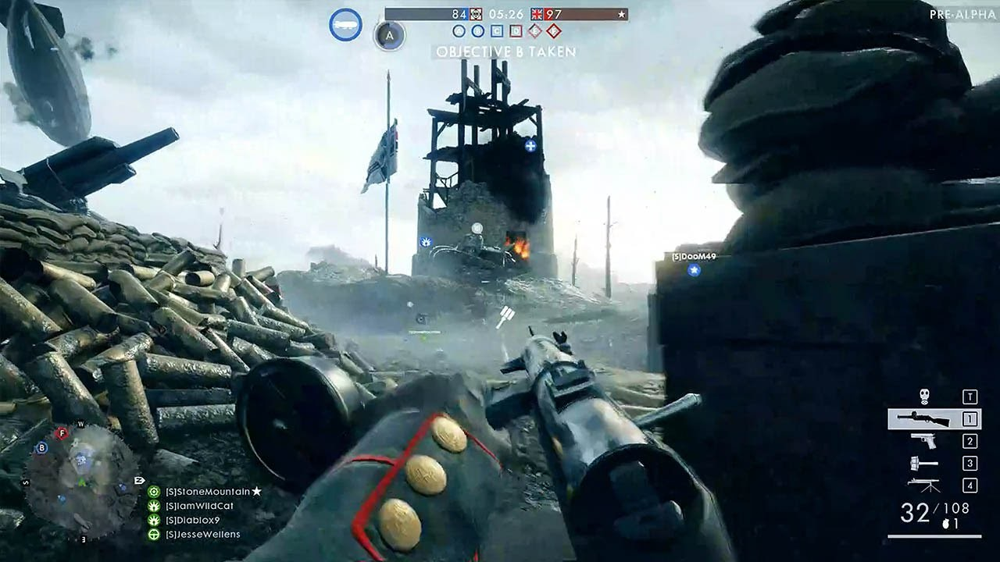
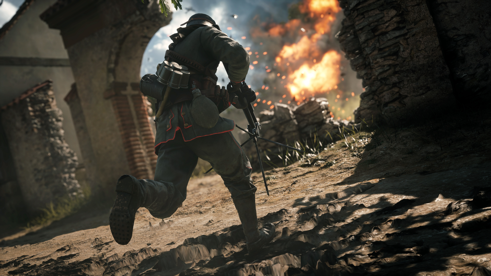

Battlefield 1 es un videojuego de disparos y acción bélica en primera persona. El título fue desarrollado por EA Digital Illusions CE y distribuido por Electronic Arts para PlayStation 4, Xbox One y Microsoft Windows. Es el décimo quinto juego de la serie Battlefield y el primer título de la serie que se ambienta en la Primera Guerra Mundial por Electronic Arts desde Wings of Glory en 1994. El juego fue confirmado en mayo de 2016 por Electronic Arts. Su lanzamiento ocurrió el 21 de octubre de 2016. Después de su lanzamiento, Battlefield 1 ha recibido muy buenos comentarios por parte de los críticos y ha sido visto como una mejora sobre los anteriores Battlefield 4 y Battlefield Hardline, alabando sobre todo a su tema en la Primera Guerra Mundial, su modo multijugador, contenido visual y campaña para un jugador. Fue un éxito comercial, vendiendo más de 15 millones de copias. El siguiente título de la serie Battlefield fue Battlefield V, lanzado en todo el mundo el 20 de noviembre de 2018.
Battlefield 1


MULTIJUGADOR A LO GRANDE
Como viene siendo habitual en la saga, e independientemente de la duración y la calidad de la campaña en cada una de sus entregas, el multijugador acaba siendo el núcleo del juego. Es ahí, en sus distintos modos online, donde al final acabamos echando horas y más horas en busca de la partida perfecta.
MODOS DE JUEGO
- Conquista: sin duda se trata del modo más popular de la saga. En este caso podrán darse cita hasta 64 jugadores por partida en un intento por hacerse con el control de los objetivos clave repartidos por el mapa.
- Dominación: básicamente es una versión reducida del modo Conquista donde hay que hacerse con objetivos estratégicos y con enfrentamientos a corta distancia.
- Operaciones: en este modo iremos pasando por distintos mapas basados en batallas reales de la Primera Guerra Mundial y podremos ejercer de atacantes o de defensores. Como atacante deberemos ir a por las posiciones defensivas del enemigo a pie, en tanque, aeroplano, barco o a caballo. Ganaremos si logramos capturar hasta el último sector del último mapa. Por otro lado, como defensores tocará usar las ametralladoras y cañones fijos para atacar al enemigo que avanza. Ganaremos al eliminar enemigos suficientes como para mermar los batallones.
- Asalto: aquí la fuerza atacante deberá encontrar y destruir los postes de telégrafo de los defensores que, mientras tanto, podrán utilizarlos para solicitar ataques de artillería. Como defensores podremos rechazar a los atacantes desarmando los explosivos que coloquen los enemigos. Si los postes quedan destruidos deberemos retroceder a otro sector. Los atacantes ganan la batalla si destruyen todas las posiciones de telégrafo de todos los sectores. Los defensores vencen si consiguen agotar los refuerzos de los atacantes o si queda al menos una posición de telégrafo intacta cuando se acabe el tiempo.
- Palomas de Guerra: en este modo, los bandos enemigos compiten por usar palomas mensajeras para solicitar descargas de artillería sobre el enemigo. Cuando comienza la partida, la primera paloma estará situada en algún lugar del mapa. Hay que encontrarla antes que el enemigo y llevarla a una ubicación segura en campo abierto. Allí tocará escribir un mensaje y enviarlo para solicitar apoyo de artillería. Después de enviar el mensaje, lloverá artillería sobre el enemigo.
- Todos contra Todos Equipo: este modo es el más sencillo y directo de todos, ya que básicamente se trata de conseguir el mayor número de bajas por equipo. Basta con salir al campo de batalla y liarse a tiros con todos intentando no morir mucho.

ESPECIALIZA A TU SOLDADO
Descubre tu estilo de juego con las Especializaciones, que mejoran las habilidades de tu soldado, desbloquean equipamiento nuevo o te hacen destacar sobre el campo de batalla con los fantásticos aspectos para armas y vehículos de los Battlepacks
REQUISITOS DEL SISTEMA
REQUISITOS MINIMOS
- Sistema operativo: Windows 7, Windows 8.1 y Windows 10 a 64 bits
- Procesador: AMD FX-6350 o Intel Core i5 6600K
- Memoria: 8 GB de RAM
- Tarjeta gráfica: AMD Radeon™ HD 7850 2 GB o NVIDIA GeForce® GTX 660 2 GB
- DirectX: tarjeta de video compatible con 11.0 o equivalente
- Conexión a Internet: 512 KBPS o conexión más rápida
- Espacio de Disco Duro: 50 GB
REQUISITOS RECOMENDADOS
- Sistema operativo: Windows 10 de 64 bits o posterior
- Procesador: AMD FX 8350 Wraith o Intel Core i7 4790
- Memoria: 16 GB de RAM
- Tarjeta gráfica: AMD Radeon™ RX 480 4 GB o NVIDIA GeForce® GTX 1060 3 GB
- DirectX: tarjeta de video compatible con 11.1 o equivalente
- Conexión a Internet: 512 KBPS o conexión más rápida
- Espacio de Disco Duro: 50 GB